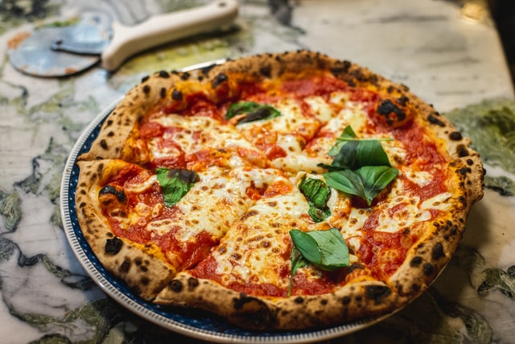
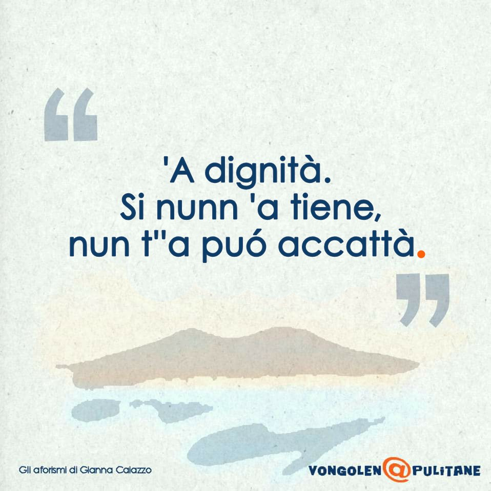

The Neapolitan pizza
Neapolitan pizza (Italian: pizza napoletana) also known as Naples-style pizza, is a style of pizza made with tomatoes and mozzarella cheese. It must be made with either San Marzano tomatoes or Pomodorino del Piennolo del Vesuvio, which grow on the volcanic plains to the south of Mount Vesuvius, and Mozzarella di Bufala Campana, a protected designation of origin cheese made with the milk from water buffalo raised in the marshlands of Campania and Lazio in a semi-wild state, or “Fior di Latte di Agerola”, a cow milk mozzarella made exclusively in the Agerola comune. Neapolitan pizza is a Traditional Speciality Guaranteed (TSG) product in Europe, and the art of its making is included on UNESCO's list of intangible cultural heritage. This style of pizza gave rise to the New York-style pizza that was first made by Italian immigrants to the United States in the early 20th century.
Source: Wikipedia
The Neapolitan language

Neapolitan is a Romance language of the Italo-Dalmatian group spoken
across much of southern Italy, except for southern Calabria, southern
Apulia, and Sicily, and spoken in a small part of central Italy (the
province of Ascoli Piceno in the Marche). It is named after the
Kingdom of Naples that once covered most of the area, of which the
city of Naples was the capital. On October 14, 2008, a law by the
Region of Campania stated that Neapolitan was to be protected.
While the term "Neapolitan language" is used in this article to refer
to the language group of related dialects found in southern
continental Italy, it may also refer more specifically to the dialect
of the Neapolitan language spoken in the Naples area or in Campania.
In fact, in a colloquial or non-academic or non-linguist context,
“Neapolitan language”, napulitano, or napoletano generally refers
specifically to the variety of the language spoken in Naples and the
surrounding area; however, this variety is usually mutually
intelligible with other related “Neapolitan language” varieties
throughout Southern Italy.
Source: Wikipedia